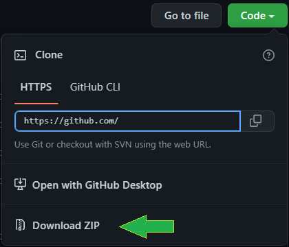
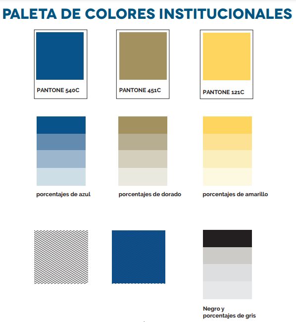

Hola Ninja
Xaringan es un paquete para la creación de diapositivas con remark.js a través de Rmarkdown. Su nombre proviene de Sharingan un dōjutsu del anime Naruto, desarrollado por Yihui Xie, ingeniero de software en RStudio.
Para instalarlo en RStudio usando la consola:
install.packages("xaringan")Desde el repositorio en github (versión desarrollador):
remotes::install_github('yihui/xaringan')¿Cómo creamos la presentación?
Para utilizar el formato de la Universidad:
Usar la plantilla que se encuentra en el repositorio.
Descargar el archivo .zip

Guardar dentro de una carpeta.
Ejecutar el archivo
ugto_xaringan.Rproj.
Justificación
La idea nace después conocer diferentes paqueterías del entorno R, una de ellas permite la creación de presentaciones como alternativa a PowerPoint.
Entre sus características principales permite:
- Automatización y reproducibilidad.
- Almacenamiento en la “nube”.
- Al procesarse se genera un archivo HTML ejecutable en exploradores web.
- Trabajar con código en R, python, SQL, CSS, C++, julia, javascript, entre otros.
- Formato de archivos: animaciones,interactividad con tablas (ordenado, filtrado y búsqueda), mapas, gráficos interactivos.
- Expresiones matemáticas con \(\LaTeX\).
- Tamaño del archivo.
- No hay “Copiar y Pegar”, por lo que reduce errores, mantiene todo en un solo lugar y al día, programable para cambios de último momento.
Elementos obligatorios dentro de la presentación
Tipografía
- Principal:
Novecento Wide
Para titulares o encabezados de primera importancia.
Esta fuente solo contiene mayúsculas
- Complementarias:
Raleway
Para subtítulos o balazos en documentos, es posible emplearse en cuerpos de textos no largos.
Gandhi Sans y Gandhi Serif
Para cuerpos de textos extensos y escritos en general, se recomiendan por su legibilidad.
Colores oficiales

| Pantone | Hexadecimal |
|---|---|
| 540C | #003057 |
| 121C | #FDD757 |
| 451C | #9B945F |
| Negro | #231F20 |
| Gris | #CCCBC8 |
Imágenes oficiales
Hay dos resoluciones disponibles para las presentaciones, 4:3 y 16:9, para este tema usaremos las imágenes de la presentación panorámica. Portada y contraportada se ajustan perfecto a la presentación, para la diapositiva interior es necesario usar la imagen 4:3 pues se muestra mejor proporcionado el escudo y el contenido.
- Portada
- Interior
Formato 4:3
Formato 16:9
- Contraportada
Comandos básicos
Nueva diapositiva
Tres guiones ---
Contenido incremental
Dos guiones --
Imagen de fondo:
class: title-slide-portada
Al crear la diapositiva con este comando los encabezados no se ajustarán debajo del escudo. Por defecto se encuentra ajustada y lista para modificar los elementos necesarios de la portada dentro del YAML ubicado en las primeras líneas del archivo .Rmd.
Contenido general:
class: title-slide-interior
Diapositiva de cierre:
class: title-slide-contraportada
Recursos
- Ejemplos de otras universidades
El resultado
Reuse
Citation
@online{avila-martínez2022,
author = {Gerardo Avila-Martínez},
title = {Hola {Xaringan}},
date = {2022-09-13},
langid = {en}
}